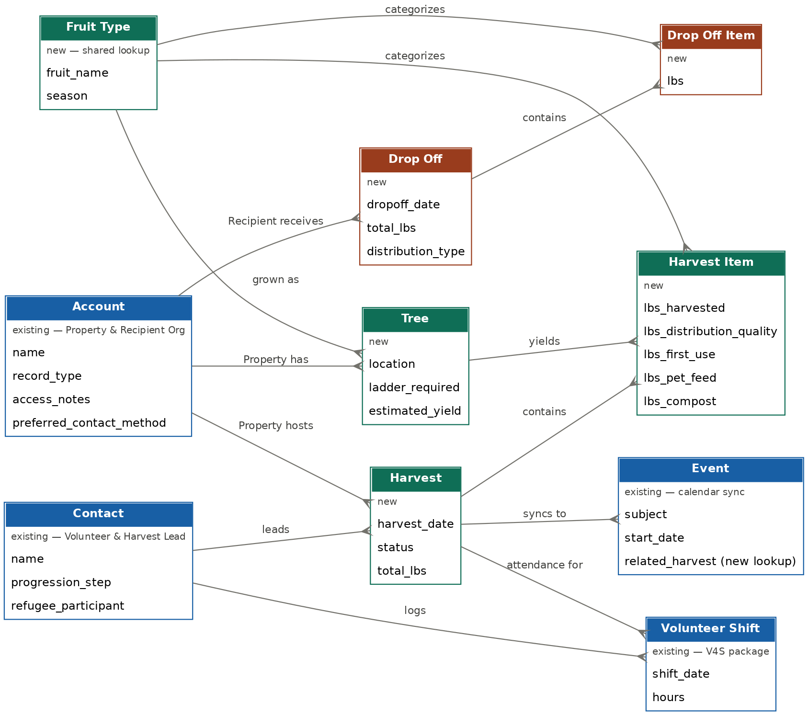

How a Harvest Runs
Harvest flow, scheduling to distribution
Harvests run 2–3 days per week, year-round, drawing on community volunteers, refugee participants, and paid staff. Each harvest is led by a Harvest Lead responsible for site management, safety, and produce quality.
| Stage | Activity | Key People |
|---|---|---|
| 1. Scheduling | Homeowner requests harvest; staff schedules date, assigns lead | Staff / Volunteer Coordinator |
| 2. Pre-harvest | Volunteers sign in, waivers confirmed, roles assigned | Harvest Lead |
| 3. Travel | Team travels from office to harvest site | Harvest Lead + crew (Driver) |
| 4. On-site harvest | Picking, spotting, crating, weighing, recording, culling, cleanup | All roles — see Roles & Expectations |
| 5. Homeowner close | Greet/thank homeowner, deliver donation envelope | Homeowner Interface role |
| 6. Return & unload | Transport produce back, unload, log in QuickBooks | Harvest Lead + Recorder |
| 7. Storage | Produce stored; mid-week cull volunteer inspects during the week | Mid-Week Cull Volunteer |
| 8. Distribution | Produce distributed to refugee families and partners weekly | Staff |
Produce destinations
| Condition | Destination |
|---|---|
| Harvest-quality fruit | Distribution to refugee families; community partners; IskaShop preservation |
| Lightly damaged | First use — taken home by harvesters or their families |
| Moderately damaged / over-ripe | Pets (primarily chickens) |
| Significantly damaged / molding | Compost |
Systems in Use Today
Where harvest data lives right now
| System | Purpose |
|---|---|
| QuickBooks | Harvest records: site address, date, pounds harvested, fruit type |
| Salesforce | Homeowner contacts; post-harvest email communication; annual impact reports |
| Sign-in sheet | Volunteer tracking per harvest; volunteer tier & roles (to be added) |
| Volunteer Hours Tracker | Self-reported volunteer hours (web form on iskashitaa.org) |
This split-system reality is the practical reason the program is moving toward Salesforce as the single system of record for harvest, volunteer, property, and distribution data — replacing QuickBooks as source of truth for harvest tracking (data sync'ed to Quickbooks where needed). The decision rationale and target data model are detailed in Salesforce Evaluation & Proposal.
The Data Model
What the framework needs to capture
The data model separates the inbound side (harvesting) from the outbound side (distribution), sharing only Fruit Type between them, and reuses the standard Account object for both homeowner properties and distribution recipients via Record Types.

What the Harvest Lead enters — required vs. recommended
This is the single most important data-discipline decision in the framework: nearly all field data enters Salesforce through one role, at one point, in 5–10 minutes per harvest.
| Field | Status | Notes |
|---|---|---|
| Property, harvest date, Harvest Lead, status | Required | Pre-populated from scheduling; status change to Completed triggers homeowner email |
| Total pounds harvested | Required | Core reporting metric |
| Distribution destination | Required | Refugee distribution / food pantry / preservation / compost — multi-select |
| Volunteer attendance | Required | Confirm pre-scheduled volunteers, mark no-shows, add walk-ins |
| Per-tree pounds + quality breakdown | Required | Distribution-quality / first-use / compost — drives every waste metric below |
| Tier/role readiness assessment, free-text notes | Recommended | Updates the volunteer's Contact record |
| Crate counts, duration, photos, satisfaction rating, weather | Nice-to-have | Valuable but not required at launch |
One item worth closing before launch, not after:There is no Required field today for estimated yield remaining on a tree, so pre-harvest loss can't be calculated — recommend promoting it to Required at least when a follow-up visit is flagged. If we want to estimate future years, this might be needed if it is somewhat common occurance.
Success Metrics Framework
What the data is for
Metrics are organized to mirror the data model above, so each one maps to a specific field rather than requiring a separate reporting system. Each is marked Available now if it's calculable from fields already Required, or Needs field if it depends on a field that's currently Nice-to-Have or not yet modeled.
Volume & Recovery All available now
Pounds per tree / property / season / fruit type; meal equivalency (lbs ÷ 1.2, the Feeding America / ReFED standard).
Loss & Waste Mixed
Recovery rate and compost rate are available now. Secondary-use rate and capture rate (pre-harvest loss) need the two gaps above closed first.
Cost & Efficiency Mostly available now
Pounds per volunteer hour; properties per Harvest Lead per season. Cost per pound is a periodic finance calculation (QuickBooks/Salesforce together), not a per-harvest field.
Mission & Reach All available now
Refugee households served, distribution partner count, refugee volunteer hours, pounds distributed per recipient org.
Property Relationship Available now (multi-year views need 2 seasons of data)
Active properties per season, year-over-year homeowner retention, new properties added, multi-year yield trend per tree.
Reporting cadence & audience
| Category | Primary Audience | Suggested Frequency |
|---|---|---|
| Volume & Recovery | Board, grant reports, annual impact report | Quarterly internal; annual external |
| Loss & Waste | Internal operations (scheduling, crew sizing) | Per harvest / monthly review |
| Cost & Efficiency | Board, major funders | Quarterly internal; annual external |
| Mission & Reach | Grant narratives, donor communications | Annual, quarterly internal tracking |
| Property Relationship | Internal operations (recruiting, scheduling) | Annual, at season close |
Full detail and field-level mapping: Iskashitaa Gleaning Framework wiki, Section 10 (Success Metrics Framework); Wiki_Reference_Data_Model_and_Metrics.md.